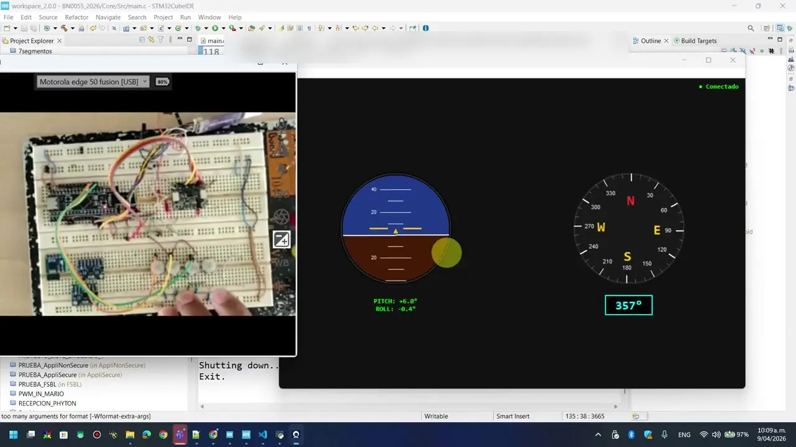

Tiene acelerómetro, giroscopio y magnetómetro, y hace internamente la calibración y la fusión (equivalente al Kalman que hicimos a mano con el MPU6050). Por eso es más costoso.
Los módulos chinos probados fallaron; el de Adafruit funcionó bien.
El BNO055 hace internamente el filtrado y la fusión de sensores, así que entrega directamente pitch, roll y yaw (y cuaterniones). Configuramos el STM32F411 con I2C1 a 400 kHz y USART1, agregamos la librería bno055 y comprobamos el sensor con BNO055_INIT. Vemos cómo cambiar la dirección (0x28 o 0x29) para manejar dos sensores en el mismo bus, el modo de fusión (brújula o giroscopio), cómo leer el estado de calibración, cómo ajustar AXIS_MAP según la posición del chip, y enviamos los ángulos a Hercules y al horizonte artificial en Python de la clase 140.

Tiene acelerómetro, giroscopio y magnetómetro, y hace internamente la calibración y la fusión (equivalente al Kalman que hicimos a mano con el MPU6050). Por eso es más costoso.
Los módulos chinos probados fallaron; el de Adafruit funcionó bien.
Con el STM32F411CEU activamos el cristal y el reloj a 100 MHz, USART1 a 115200 e I2C1 a 400 kHz. El proyecto se llama BNO055_2026.
En LIBRERIAS copiamos bno055.c/.h, la imagen bno055_map.png (posiciones del chip) y uart.c/.h, e incluimos todo en main.c junto con stdio.h y string.h. Activamos printf con float.
#include "uart.h"
#include "bno055.h"
#include "stdio.h"
#include "string.h"
char texto[100];En bno055.h se pone el I2C usado y la dirección: 0x28 si el pin de dirección está en 0, 0x29 si está en 1.
extern I2C_HandleTypeDef hi2c1;
// Direccion I2C del sensor BNO055 0x28 O 0x29
#define BNO055_ADD 0x28
extern uint8_t BNO055_I2C_ADDRESS; // colocar direccion del sensorBNO055_INIT() devuelve 1 si encontró el sensor. Lo usamos para avisar por serial si está bien o no.
/* USER CODE BEGIN 2 */
uartx_write_text(&huart1, "INICIANDO\r\n");
if (BNO055_INIT() == 1) uartx_write_text(&huart1, "SENSOR OK\r\n");
else uartx_write_text(&huart1, "SENSOR BAD\r\n");Si cambias BNO055_ADD a una dirección donde no hay sensor, aparece SENSOR BAD.
Antes de cualquier función se puede fijar la dirección con BNO055_I2C_ADDRESS (desplazada a la izquierda). Todas las funciones que siguen trabajan con ese sensor.
Para dos sensores (0x28 y 0x29), antes de cada llamada se pone la dirección del sensor deseado.
BNO055_I2C_ADDRESS = 0x29<<1;
if (BNO055_INIT() == 1) uartx_write_text(&huart1, "SENSOR1 OK\r\n");
else uartx_write_text(&huart1, "SENSOR1 BAD\r\n");
BNO055_I2C_ADDRESS = 0x28<<1;
if (BNO055_INIT() == 1) uartx_write_text(&huart1, "SENSOR2 OK\r\n");
else uartx_write_text(&huart1, "SENSOR2 BAD\r\n");Si solo tienes un sensor no hace falta: por defecto usa la dirección de BNO055_ADD.
Por defecto el init deja el modo brújula (0x0C, NDOF): el yaw sale del magnetómetro, sin deriva y respecto al norte magnético. El modo giro/acelerómetro (0x08) calcula el yaw con el giroscopio.
Con la brújula, evita baterías, imanes y campos magnéticos cerca.
// MODO DE OPERACION O FUSION
// BNO055_Modo(modo_brujula); // opcional (0x0C)
// BNO055_Modo(modo_giro_ace); // opcional (0x08)Después del init se recomienda esperar más de 1.5 s para que el sensor se calibre.
BNO055_Lee_calibracion() deja en cali_giro, cali_ace y cali_mag un valor de 0 a 3: 3 = calibrado.
HAL_Delay(1500);
// si se quiere leer los estados de calibracion donde 3 es ok
BNO055_Lee_calibracion();
sprintf(texto, "cal_giro=%u\r\n", cali_giro);
uartx_write_text(&huart1, texto);
sprintf(texto, "cal_acel=%u\r\n", cali_ace);
uartx_write_text(&huart1, texto);
sprintf(texto, "cal_mag=%u\r\n", cali_mag);
uartx_write_text(&huart1, texto);Giro: déjalo quieto. Acelerómetro: gíralo 90° en los ejes X y Y. Magnetómetro: muévelo en forma de 8 en el aire (solo en modo 0x0C).
Según cómo esté montado el chip (posiciones P0 a P7 de la imagen bno055_map.png, sacada del datasheet), se ajustan AXIS_MAP_CONFIG y AXIS_MAP_SIGN en bno055.h para que los ángulos salgan con el signo correcto.
Por defecto (P1) es 0x24 / 0x00. En el video el sensor está en P2: 0x24 / 0x06.
// ojo programar aqui orientacion del sensor (ver archivo bno055_map.png)
#define BNO055_AXIS_MAP_CONFIG_DEFAULT 0x24
#define BNO055_AXIS_MAP_SIGN_DEFAULT 0x06 // posicion P2Si al inclinar a la derecha te da positivo y lo quieres negativo (o se invierte el roll), revisa esta tabla.
La librería tiene funciones para datos crudos, aceleración (en g), aceleración lineal, giro (°/s), magnetómetro (Gauss), ángulos de Euler y cuaterniones. Cada una deja el resultado en variables globales (ax, gx, max, pitch, roll, yaw...).
Los cuaterniones son para casos como aviones acrobáticos que pasan de 90°, donde Euler se indetermina.
// Funcion para leer aceleraciones lineales (ejemplo de la libreria)
void BNO055_Lee_Aceleracion_lineal()
{
uint8_t data[6];
HAL_I2C_Mem_Read(&hi2c1, BNO055_I2C_ADDRESS, BNO055_LINEAR_ACC_DATA_X_LSB, I2C_MEMADD_SIZE_8BIT, data, 6, 100);
int16_t raw_alx = (int16_t)(data[1] << 8 | data[0]);
int16_t raw_aly = (int16_t)(data[3] << 8 | data[2]);
int16_t raw_alz = (int16_t)(data[5] << 8 | data[4]);
// Convertir datos en bruto a m/s^2
alx = (float)raw_alx / 100.0;
aly = (float)raw_aly / 100.0;
alz = (float)raw_alz / 100.0;
}Los parámetros finales de HAL_I2C_Mem_Read no se ven completos en el video.
En el while llamamos BNO055_Lee_Euler() y enviamos pitch, roll y yaw.
Con dos sensores: pon la dirección, lee Euler y copia pitch/roll/yaw a variables propias (pitch1, pitch2...) antes de leer el otro, porque las variables son las mismas.
while (1)
{
BNO055_Lee_Euler();
sprintf(texto, "Pitch=%.2f Roll=%.2f Yaw=%.2f\r\n\r\n", pitch, roll, yaw);
uartx_write_text(&huart1, texto);
HAL_Delay(500);
}Al inclinar la placa cambian pitch y roll (positivos de un lado, negativos del otro) y al girarla cambia el yaw de 0 a 360°.
Usamos el mismo programa IMU_2026.py de la clase 140, que espera INI=pitch/roll/yaw*. Enviamos cada 10 ms.
BNO055_Lee_Euler();
sprintf(texto, "INI=%.2f/%.2f/%.2f*\r\n", pitch, roll, yaw);
uartx_write_text(&huart1, texto);
HAL_Delay(10);Cierra Hercules antes de abrir el puerto desde Python.
El horizonte sigue la inclinación de la placa y la brújula marca el rumbo. Si cambias AXIS_MAP_SIGN a un valor que no corresponde a la posición, verás que un eje se invierte.